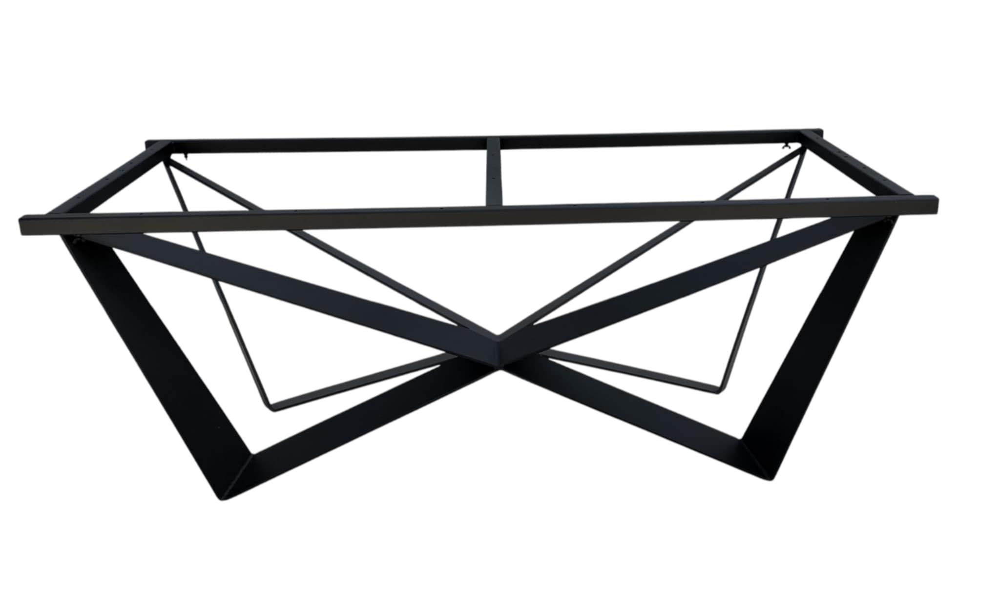

Tworzymy stal z charakterem
GREG-SPAW to połączenie nowoczesnego designu i solidnego rzemiosła. Specjalizujemy się w produkcji elementów stalowych, konstrukcji oraz nóg do stolików — zaprojektowanych, by służyć przez lata i cieszyć oko perfekcyjnym wykonaniem.

Zobacz ofertę